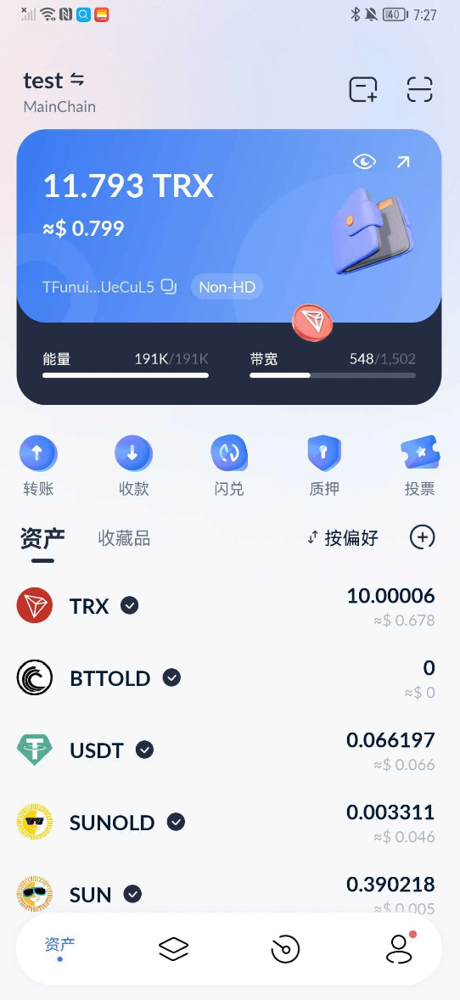

in Buy Proxy When it comes to IP, the most troublesome thing for everyone is the payment method. I recommend a very direct payment method for you. USDT (TRC-20)  This payment method is very convenient!
This payment method is very convenient!
What is USDT (TRC-20)？USDT (TRC-20) It is a kind of encrypted currency, also called TronLink wallet in China, it is Tether A token based on the TRON blockchain launched by the company. USDT is a stablecoin, pegged to fiat currencies such as the U.S. dollar, whose value remains largely stable. USDT(TRC-20) 是基于 TRON A stable currency in the blockchain, with higher transaction speed and lower transaction fees, it is convenient for users to conduct operations such as cryptocurrency transactions, storage and transfers.
TronLink wallet official website: https://www.tronlink.org/cn/
How to create a new account in TronLink wallet plugin?(Mobile APP is also applicable)
How to use TronLink App to transfer/receive money?
how to import TronLink wallet?
how to manage TronLink wallet?
TronLink Provides high-level security measures, users can set passwords, mnemonic and other security options to protect accounts and assets. TronLink The wallet is an open source project, jointly maintained and updated by developers around the world. Users can use it with confidence, and can GitHub Check out the code. TronLink Wallet is an excellent digital wallet that provides users with a highly secure and convenient digital asset management and transaction experience on the TRON blockchain.
Note: Paying with the TronLink wallet needs to consume TRX, so you need to prepare some TRX in the wallet

Buy USDT
Choose and register with a trusted digital currency trading platform. For example: Gate.io, Binance, Coinbase, Kraken, etc. Complete account verification and add your payment method. Common payment methods include bank transfer, credit or debit card, etc.
| platform | Daily Quota | support | Require |
|---|---|---|---|
Gate.io |
one million USDT | Chinese users | Real-name authentication |
欧易 |
one million USDT | Chinese users | Real-name authentication |
Transfer or deposit the currency you want to Buy USDT, such as RMB or USD. This usually takes some time to confirm and process. Some platforms support direct credit card payment to purchase cryptocurrency, which may be faster, but may also require high fees.

Find USDT/The trading pair of the desired currency and perform the purchase operation on the platform. Before buying, please carefully review the price, liquidity and handling fees of the trading pair.
Once you have purchased USDT, store it in a secure digital wallet such as a hardware wallet (e.g. Ledger Nano S and Trezor) or software wallets such as Exodus or Electrum.
Take Proxy-seller payment as an example
1，select order list

2，choose the payment method

3，Get payment address

4，Fill in the receiving account, confirm the transaction information, and sign the transaction to complete the transfer operation, and wait for the successful transfer on the chain. （detailed referenceHow to use TronLink App to transfer/receive money?）